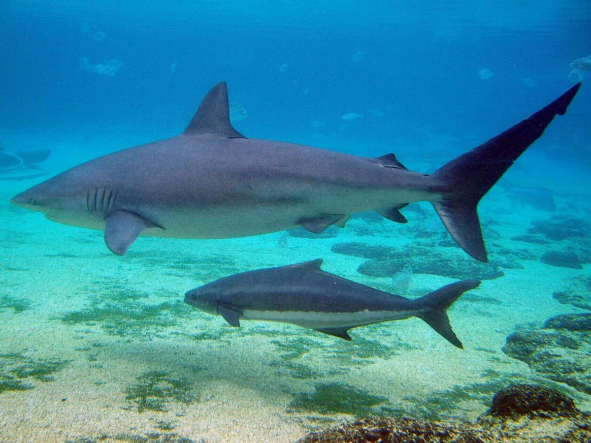
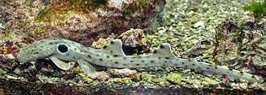

| ☆CARCHARNIFORMES☆ |
- Largest order of sharks
- Also known as "ground sharks"
- ✧CHARACTERISTICS✧
- 5 gill slits
- moveable eyelids protecting eyes from injury
- 2 spineless dorsal fins
- 1 anal fin
- Wide mouth
✧SPECIES UNDER THIS ORDER✧
- White shark (which we all know)
- Great hammerhead shark (another one)
- Blacktip shark
- Dusky shark

|
| ☆HETERONTIFORMES☆ |
- Small order of sharks
- Only 9 known species
- ✧CHARACTERISTICS✧
- 5 gill slits
- Dorsal fin with strong spine
- Both sharp and flat rounded teeth
✧SPECIES UNDER THIS ORDER✧
- Horn shark
- Bullhead shark
|
|---|
| ☆ORECTOLOBIFORMES (obviously the best)☆ |
- Most diverse order of sharks
- ✧CHARACTERISTICS✧
- 5 gill slits
- 2 spineless dorsal fins
- 1 anal fin
- Spiracles (holes adjoining with the mouth)near eyes
- Most have a patterned skin

|
|---|